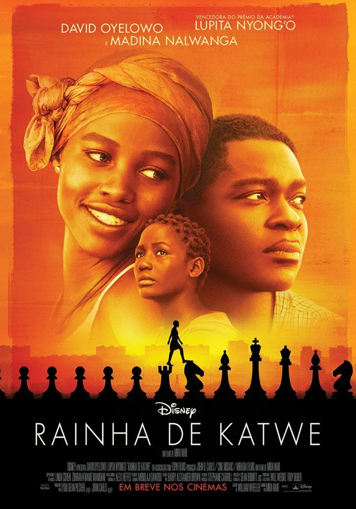
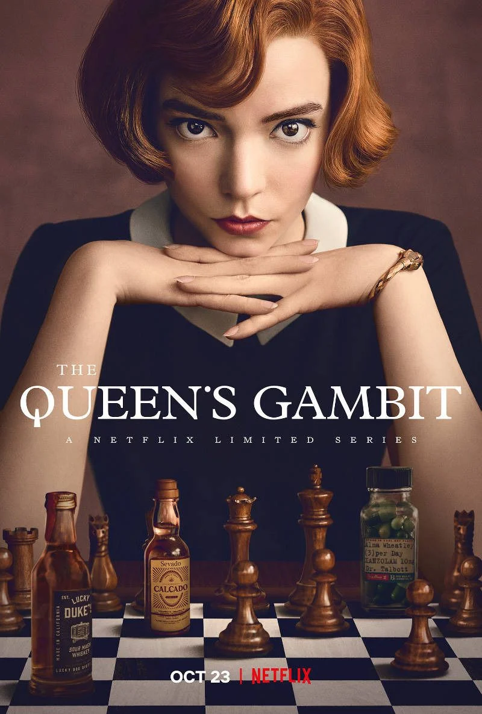

Dicas essenciais sobre xadrez
Antes de se preocupar com grandes estratégias ou nomes complicados de aberturas, é essencial aprender e praticar bons hábitos no tabuleiro. Pequenas atitudes fazem grande diferença, especialmente para quem está começando.
Aqui vão algumas dicas valiosas para evoluir com segurança e inteligência no jogo:
Dica 1: Toquei, joguei!
Nunca toque em uma peça se não for movê-la. Se encostar, é obrigado a jogar com ela.
Dica 2: Domine o centro
Casas centrais (d4, d5, e4, e5) dão controle e liberdade para suas peças.
Dica 3: Roque cedo e com segurança
Fazer o roque o quanto antes é essencial para proteger o rei e conectar as torres.
Dica 4: Desenvolva com inteligência
Comece com peão de e4 ou d4. Traga os cavalos antes dos bispos e evite mover a mesma peça duas vezes na abertura.
Dica 5: Cuidado com trocas
Não troque peças sem pensar no valor e no posicionamento final.
Dica 6: Não traga a dama cedo
Ela é poderosa, mas virar alvo no início pode te atrapalhar.
Dica 7: Pense no lance do adversário
Sempre reflita: “O que meu oponente pode fazer depois disso?”
Sites para praticar xadrez
Canais do YouTube sobre xadrez
Filmes e séries sobre xadrez
-

Rainha de Katwe – Baseado em uma história real, mostra a jornada de uma jovem de Uganda que se destaca no xadrez.
Disponível no: Disney+ -

O Gambito da Rainha (The Queen's Gambit) – Série de ficção sobre uma prodígio do xadrez enfrentando vícios e desafios pessoais.
Disponível no: Netflix -

Magnus – Documentário sobre a ascensão de Magnus Carlsen no cenário mundial.
Disponível no: Amazon Prime Video